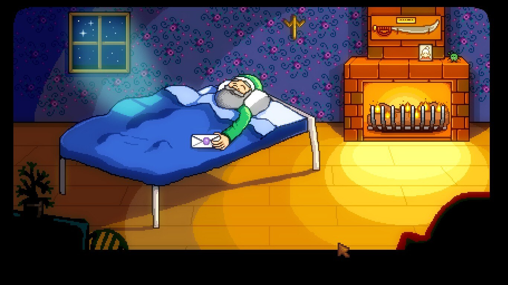

Stardew Valley, mais conhecido como "O jogo da fazendinha", foi inspirado no título principal da franquia de jogos Story of Seasons (Histórias da fazenda/Histórias das estações), Harvest Moon, lançado em 1996 para o Super Nintendo. Durante 4 (quatro) anos de produção independente, Eric Barone, seu criador, de pseudônimo 'ConcernedApe', desenvolveu suas habilidades ao decorrer da produção do jogo.
Em 26 de fevereiro de 2016 é lançado Stardew Valley para PC, suportando sistemas como Mac e Linux, e expandindo logo mais para o PlayStation 4, Xbox One, Nintendo Switch e Android. Com uma jogabilidade acessível, gráficos cativantes e uma história representativa, Stardew Valley conquistou desde cedo sua comunidade, que até os dias atuais se faz presente no jogo e interagindo entre si.
Quando mais nova(o), seu avô, aparentando estar doente e em estado grave, lhe entrega um envelope com uma carta, dizendo que é o presente especial para sua(seu) neta(o) querida(o). Ele pede para que apenas abra o envelope quando se cansar da vida da cidade grande, quando toda aquela rotina for mais desgastante que prazerosa. Certo dia, cansada(o) de todo o trabalho e da vida rotineira que vivenciava, você resolve abrir o envelope e ver o que de tão especial havia naquela carta. Nela, o seu avô escrevera que se está lendo, é porque está desesperada(o) com a sua vida atual, conta que o mesmo aconteceu com ele quando mais jovem e diz que não há nada mais importante que a conexão com a natureza e boas pessoas. No fim da carta ele deixa para você seu antigo lar e sua fazenda, localizada no Vale do Orvalho, próximo à Vila Pelicanos. E é com carinho da Robin e do Lewis que você é recebida(o) em sua fazenda.
Sua trajetória no Vale do Orvalho não será fácil, você precisará limpar a sua fazendo que (até então estava abandonada), reparar estruturas, conhecer novas pessoas e viver as aventuras que existem pelo mundo de Stardew Valley!